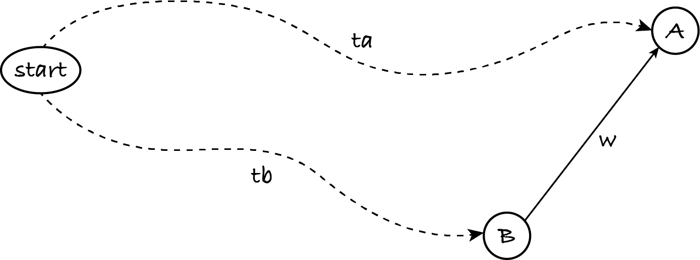

18.4. Shortest paths
This section introduces an algorithm to solve the single-source shortest paths (SSSP) problem for weighted graphs: for each node R that is reachable from the given start node S, find a lowest cost (total weight) path from S to R. A typical application of the SSSP problem is to find the cheapest or fastest way to go from one place to every other place in a transport network.
We defined the MST problem for connected undirected graphs to guarantee that a spanning tree can be obtained, no matter the start node. The SSSP problem is defined for any directed or undirected graph, because it doesn’t ask to connect all nodes. However, the algorithm to be shown only works for graphs with non-negative weights; most models of real-world networks don’t have negative weights, so this isn’t much of a restriction in practice.
18.4.1. Algorithm
The algorithm is again a graph traversal that produces a tree rooted at the start node, with a single path to each reachable node. In fact, it’s a small modification of Prim’s algorithm.
Prim’s algorithm greedily chooses in each iteration the unvisited node ‘nearest’ to any visited node, because it’s minimising the total weight of the tree. The SSSP algorithm chooses instead the unvisited node ‘nearest’ to one visited node, namely the start node, because it’s minimising the weight of the paths beginning at the start node. This is known as Dijkstra’s algorithm, named after its inventor.
You should now watch a visualisation that explains the gist of Dijkstra’s algorithm, applied to a connected undirected graph in which weights represent distances. The visualisation doesn’t create a tree with the shortest paths: it only computes their weights. Extra work is then needed to obtain the paths.
Now that you’ve seen the algorithm in action, let’s see why it works. The next figure shows schematically the shortest paths to nodes A and B, with total weights ta and tb, respectively. In addition there’s an edge with non-negative weight w from B to A.
Let’s assume that A is visited before B by the algorithm. This means that A is ‘nearer’ to the start node than B, i.e. ta ≤ tb and therefore ta ≤ tb + w. In other words, the path to A via B can’t be shorter. Therefore, as soon as the algorithm picks A to visit next, it knows it has found a shortest path. Paths via nodes visited later won’t be shorter.
Note that if w < 0 then we may have ta > tb + w. If weights can be negative, the greedy choice of picking the next nearest node won’t always work: a shorter path may go first to a node further off and then take a negative weight edge to obtain a lower total weight.
As I mentioned above, the visualisation doesn’t construct a tree. So let’s take our version of Prim’s algorithm and use different priorities. My version of Prim’s algorithm adds edge (A, B, w) with priority w to the min-priority queue of unprocessed edges. For Dijkstra’s, the priority is the cost (total weight) of reaching B via A, i.e. it’s the cost to reach A plus w.
How do I know the cost of reaching A? Well, the graph traversal only adds edge (A, B, w) when visiting A, and it visits A because it took from the queue some incoming edge (C, A) with priority p which is the cost of reaching A.
let visited be a weighted digraph with node start
let unprocessed be an empty min-priority queue
for each node in the out-neighbours of start in graph:
add edge (start, node, weight) with priority weight to unprocessed
while unprocessed isn’t empty:
let (previous, current, weight) be max(unprocessed) with priority cost
remove max(unprocessed)
if visited hasn’t got node current:
add current to visited
add (previous, current, weight) to visited
for each node in the out-neighbours of current in graph:
let weight be weight(current, node)
add edge (current, node, weight) with priority cost + weight to unprocessed
The only changes to Prim’s algorithm are to use out-neighbours instead of neighbours in steps 3 and 4.3.3, to accommodate digraphs, and computing a different priority in step 4.3.3.2.
The changes don’t affect the worst-case complexity, which is O(e log e), like for Prim’s algorithm.
Info: The worst-case complexity of both algorithms is often stated as O(e log n). Any graph has fewer than n² edges and log \(x^y\) = \(y\) log \(x\), so O(e log e) = O(e log n²) = O(e × 2 × log n) = O(e log n).
My versions of BFS, DFS, Prim’s and Dijkstra’s algorithms aim to highlight their similarities: they use the same core graph-traversal algorithm, only differing in the order in which unprocessed edges are stored.
Exercise 18.4.1
If the weights in the input graph are all equal, can you compute the shortest paths without using Dijkstra’s algorithm?
18.4.2. Code
Let’s implement and run the algorithm.
[1]:
%run -i ../m269_digraph
%run -i ../m269_ungraph
%run -i ../m269_graphs
Like for Prim’s algorithm, I use Python’s min-heaps.
[2]:
# this code is also in m269_digraph.py
from heapq import heappush, heappop
def dijkstra(graph: WeightedDiGraph, start: Hashable) -> WeightedDiGraph:
"""Return a shortest path from start to each reachable node.
Preconditions:
- graph.has_node(start)
- node objects are comparable
- no weight is negative
"""
visited = WeightedDiGraph()
visited.add_node(start)
# create min-priority queue of tuples (cost, (A, B, weight))
# cost is total weight from start to B via shortest path to A
unprocessed = [] # min-priority queue
for neighbour in graph.out_neighbours(start):
weight = graph.weight(start, neighbour)
heappush(unprocessed, (weight, (start, neighbour, weight)))
while len(unprocessed) > 0:
info = heappop(unprocessed)
cost = info[0]
edge = info[1]
previous = edge[0]
current = edge[1]
weight = edge[2]
if not visited.has_node(current):
visited.add_node(current)
visited.add_edge(previous, current, weight)
for neighbour in graph.out_neighbours(current):
weight = graph.weight(current, neighbour)
edge = (current, neighbour, weight)
heappush(unprocessed, (cost + weight, edge))
return visited
Let’s use the example MST graph of Section 18.3.
[3]:
RHOMBUS.draw()
If the start node is A then the shortest paths happen to coincide with the MST, if we ignore the edge directions of the output digraph.
[4]:
dijkstra(RHOMBUS, "A").draw()
However, if the start node is D then we get a different spanning tree.
[5]:
dijkstra(RHOMBUS, "D").draw()
Finding the MST involves minimising the total weight of all edges. Finding shortest paths involves minimising the weight of each path: hence the output tree is often not an MST.
The interactive visualisation graph is another example of that.
[6]:
# this code is also in m269_graphs.py
# graph used by the interactive visualisation of Dijkstra's algorithm
DIJKSTRA = WeightedUndirectedGraph()
for node in "ABCDEFGHK":
DIJKSTRA.add_node(node)
DIJKSTRA.add_edge("C", "A", 20)
DIJKSTRA.add_edge("A", "B", 4)
DIJKSTRA.add_edge("B", "F", 1)
DIJKSTRA.add_edge("F", "H", 1)
DIJKSTRA.add_edge("B", "G", 3)
DIJKSTRA.add_edge("G", "K", 5)
DIJKSTRA.add_edge("K", "H", 3)
DIJKSTRA.add_edge("C", "D", 2)
DIJKSTRA.add_edge("D", "E", 2)
DIJKSTRA.add_edge("E", "G", 3)
DIJKSTRA.add_edge("E", "K", 3)
[7]:
DIJKSTRA.draw()
[8]:
prim(DIJKSTRA, "C").draw()
[9]:
# the automated layout of graphs is semi-random
# you may need to re-run this cell several times to get a good layout
dijkstra(DIJKSTRA, "C").draw()
18.4.3. Applications
The following exercises show applications of the SSSP problem and Dijkstra’s algorithm.
Exercise 18.4.2
Sometimes we want to solve the single-pair shortest path problem: find the shortest path between a given start and a given end node. How would you change Dijkstra’s algorithm so that instead of a tree it returns a sequence of nodes representing the shortest path from the start to the end node? The end node is an extra input of the new algorithm. If the end node is not reachable from the start node, the output sequence is empty.
You don’t have to rewrite the algorithm or the code: a brief description of the changes suffices.
Exercise 18.4.3
Sometimes a problem setter has a vague idea of what they want and the problem solver has to provide a precise and implementable definition. This exercise presents such a scenario. It’s a modelling exercise without one right answer.
You were previously asked by an advertising agency to determine the best train stations for displaying an advert, given an undirected unweighted graph of the rail network. Suppose the edges are now weighted with the travel times.
The agency thinks the adverts will be seen by more people in central stations. You’re asked to come up with a precise definition of which node or nodes in a weighted undirected connected graph are central and to outline an algorithm to find them. The algorithm doesn’t have to be efficient.